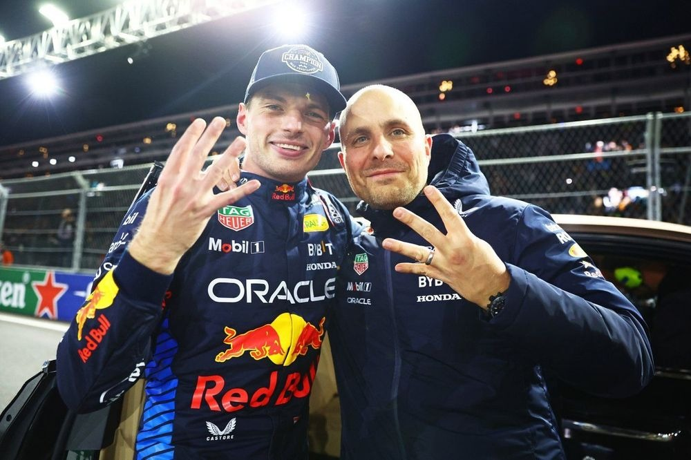
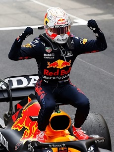
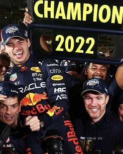
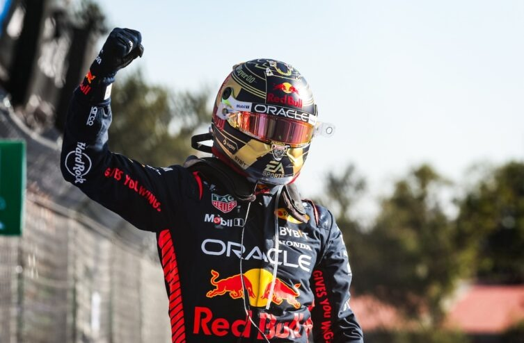
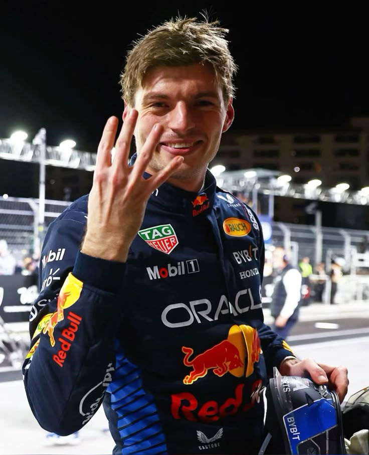

Max Emilian Verstappen nasceu em 30 de setembro de 1997 em Hasselt, Bélgica. Até seus 18 anos, não tinha nacionalidade neerlandesa, apenas uma licença esportiva, e até então residia na cidade belga Maaseik, que faz fronteira com os Paises Baixos. Se tornar um piloto profissional pela bandeira da Holanda, foi uma decisão do próprio, por que se sente mais neerlandês. Desde de outubro de 2015, ano no qual ele entrou para formula 1, Verstappen mora em Monte Carlo, Mônaco.
Em 2021, Max oficializou seu relacionamento com a modelo Brasileira Kelly Piquet, filha do tricampeão Nelson Piquet. Ele se tornou padrasto de Penélope, filha de Kelly com o ex-piloto da Red Bull Daniil Kvyat. Em dezembro de 2024, foi anunciada a gravidez de Kelly, com Verstappen se tornando pai pela primeira vez. E em maio de 2025, Verstappen anunciou o nascimento de sua primeira filha, chamada Lily.
Carreira
A carreira de Max Verstappen começou cedo, tendo feito sua estreia na Formula 1 no dia 15 de março de 2015 com seus 17 anos, tornando-se assim o piloto mais jovem da história da categoria.
Ele iniciou sua trajetória na equipe scuderia Toro Rosso, onde rapidamente demonstrou seu talento e habilidades execepcionais. E em 2016 foi promovido para a equipe Red Bull Racing, onde continuou com performaces impressionantes.
Ele conquistou sua primeira vitória na Formula 1 no Grande Prêmio da Espanha de 2016, tornando-se o piloto mais jovem a vencer uma corrida na história da categoria. E depois de bater na trave algumas vezes, em 2021 Max verstappen conquistou seu primeiro campeonato mundial de Formula 1, encerrando o domínio do heptacampeão Lewis Hamilton, em uma emocionante porem controversa temporada.
E então começou sua dominância, conquistando os campeonatos mundiais de 2021, 2022, 2023 e 2024, e busca o penta em 2025, consolidando-se como um dos maiores pilotos da história da Formula 1. Max também correu em outras categorias do automobilismo, como a formula 3, a GP3 e a NLS, sendo a ultima com maior destaque pela diferença de performace dos carros e por ter vencido na sua estreia na categoria.

Conquistas
2021

Grandes prêmios
Emília-Romanha
Mônaco
França
Estíria
Áustria
Bélgica
Holanda
Estados Unidos
México
Abu Dhabi
Pontos
395,5
2022

Grandes prêmios
Emília-Romanha
França
Bélgica
Holanda
Estados Unidos
México
Abu Dhabi
Arábia Saudita
Azerbaijão
Miami
Espanha
Canada
Hungria
Itália
Japão
Pontos
454
2023

Grandes prêmios
Mônaco
Áustria
Bélgica
Holanda
Estados Unidos
México
Abu Dhabi
Bahrein
Austrália
Miami
Espanha
Canada
Grã-Bretanha
Hungria
Itália
Japão
catar
Brasil
Las Vegas
Pontos
575
2024

Grandes prêmios
Emília-Romanha
Arábia Saudita
china
Bahrein
Espanha
Canada
Japão
catar
Brasil
Pontos
437
Recordes
Em sua carreira, Max Verstappen quebrou alguns recordes, reescrevendo a historia da fórmula 1 e deixando sua marca historica no esporte. Abaixo está todos os seus recordes.
Piloto mais jovem a participar de um fim de semana de corrida de F1.
Idade:17 anos e três dias
Ano:2014
PIloto mais jovem a competir na F1.
Idade:17 anos e 166 dias
Ano: 2015
Piloto mais jovem a marcar pontos na F1.
Idade:17 anos e 180 dias
Ano:2015
Vencedor mais jovem de uma corrida de F1.
Idade:18 anos e 228 dias
Ano: 2016
Piloto mais jovem a estabelcer a volta mais rapida.
Idade:19 anos e 44 dias
Ano:2016
PIloto mais jovem a conquistar um Grand Slam na F1.
Idade:23 anos e 277 dias
Ano: 2021
maior nuemro de vitorias consecutivas em corridas.
Ano:2023
maior numero de pódios em uma temporada de F1.
Ano:2023
Maior número de pontos no Campeonato Mundial em uma temporada.
Ano:2023
Maior número de vitórias em uma temporada de F1.
Ano: 2023
Maior percentual de vitórias em uma temporada.
Ano:2023
Maior sequência de pontos marcados na F1.
Ano: 2024
Maior número de pole positions consecutivas.
Ano:2024
Maior tempo na liderança do Campeonato Mundial de Pilotos de Fórmula 1.
Ano: 2024
O primeiro piloto a vencer largando de 10 posições diferentes no grid.